Maine Photos
Various scenes from Maine showing the rivers, lakes, mountains and ocean. All photos by Eric York.
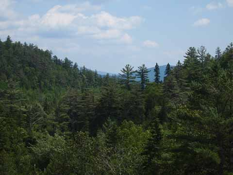
Pine tree ridge with mountain.
×

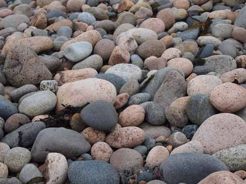
Round rocks at Wonderland Beach.
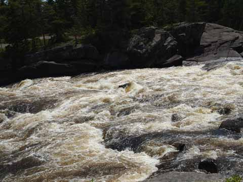
Penobscot River Rapids.
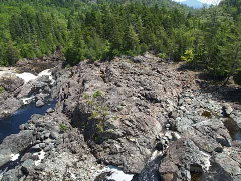
Rocky outcrop at Rip Gorge.
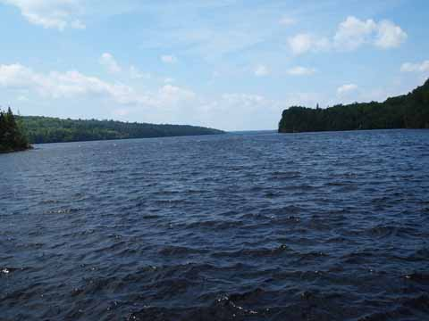
Ambejejus Lake toward the West.
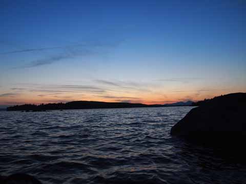
Ambejejus Lake at sunset.
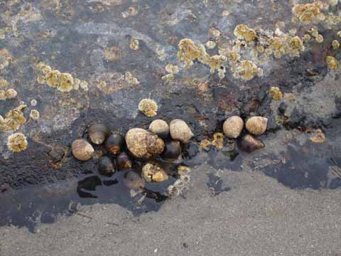
A tide ecosystem on Mt. Desert Island.
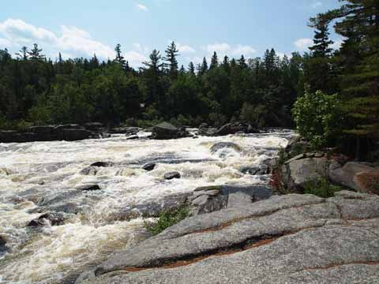
East Branch of the Penobscot River.
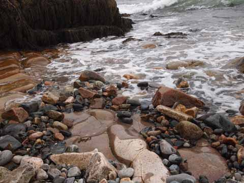
The shoreline at Wonderland Beach.
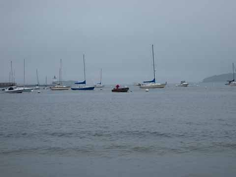
Working boats in the harbor.
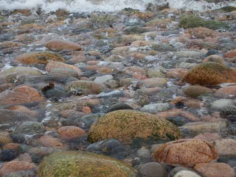
Round rocks awash in seafoam.
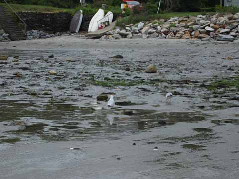
Gulls walking on the mudflats.